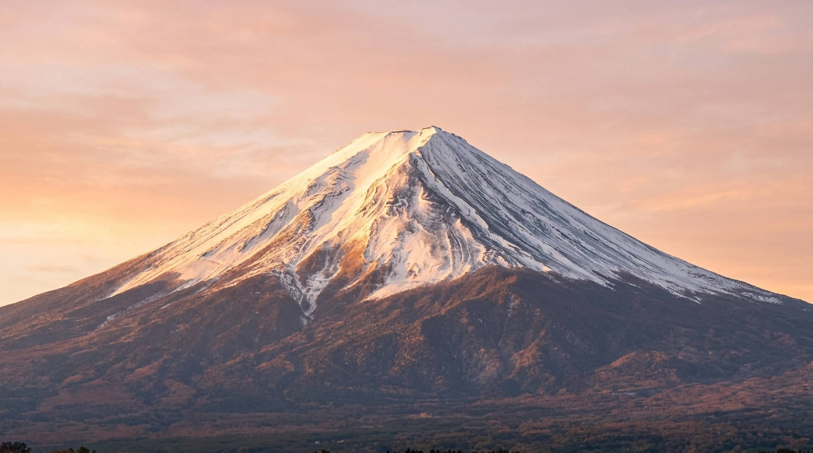

Popular Tourist Spots

Mount Fuji
Japan's iconic mountain and a UNESCO World Heritage Site.

Tokyo
Experience futuristic tech, fashion, anime, and world-class cuisine.

Kyoto Temples
Historic shrines, cherry blossoms, and Japan’s traditions.